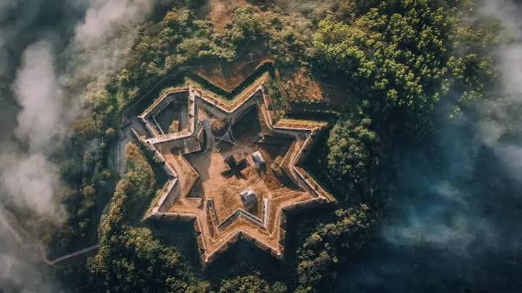
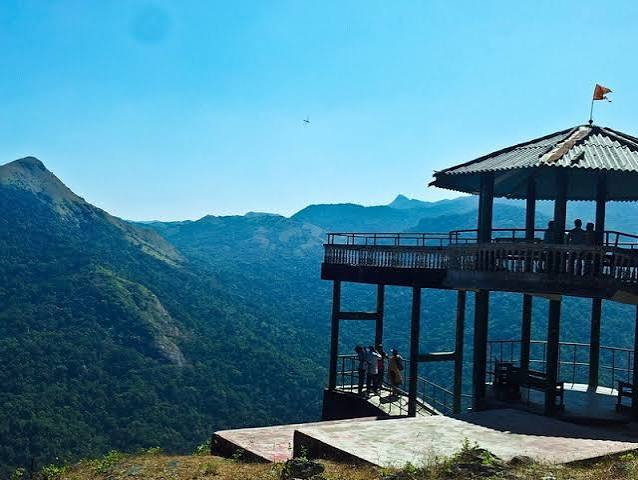
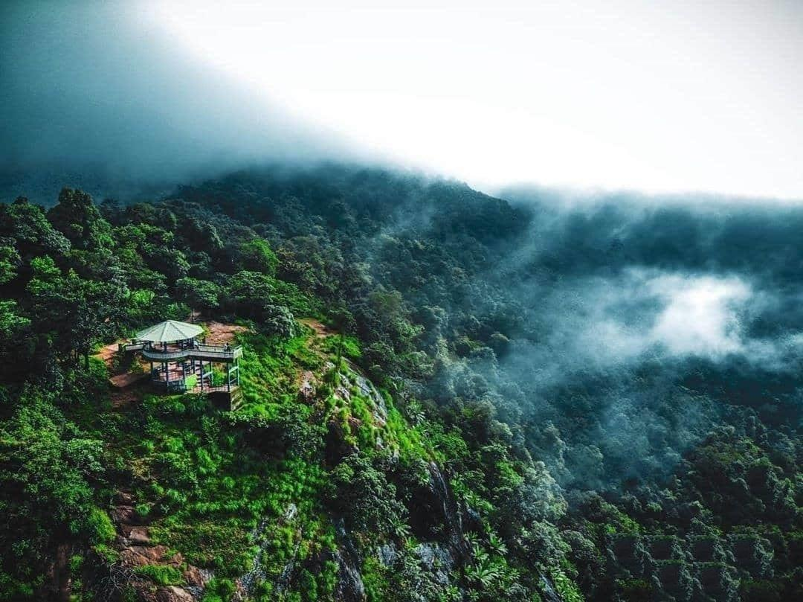
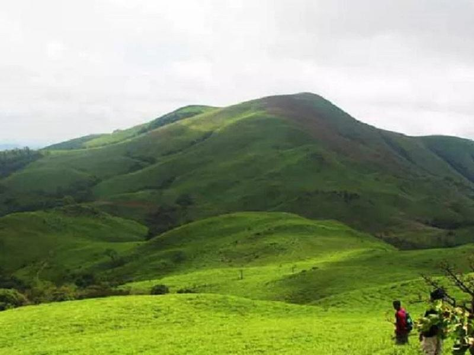

Manjarabad Fort is one of the most famous historical attractions in Sakleshpur. The star-shaped fort offers beautiful views of the surrounding hills and greenery.
Read More
Bisle Ghat is a beautiful forest region near Sakleshpur. It is known for its lush greenery, mountains, wildlife and scenic views.
Read More
Bisle Reserve Forest is a popular destination for nature lovers. The area is surrounded by dense forests, hills and rich biodiversity.
Read More
Jenukallu Gudda is a popular trekking destination near Sakleshpur. It is famous for its beautiful mountain views, green landscapes and peaceful surroundings.
Read More© 2026 Sakleshpur Explorer